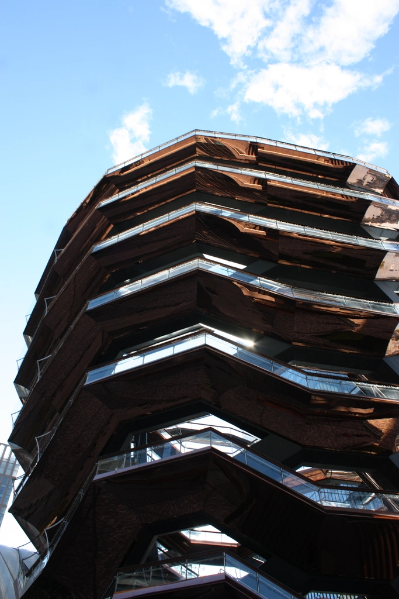

About STRIX
The KSS robotics club is a group of passionate young minds who believe in the importance of investing in the innovators of tomorrow: Students. We do this through STEM education. In our club, we allow students to pursue STEM not only in a collaborative environment, but in a professional one as well. This means students cultivate a sense of business while developing a variety of valuable skills. Skills from reliability, project management, and social networking, to programming, mechanics, and design-based thinking. However, we can only contribute in this way largely because of the competitions the club takes part in. Our main one is the First Robotics Competition. Our team is excited as ever to seize the opportunity, and compete in this amazing competition like we did the year prior!
Bot1

Year
Blerb about the bot
Bot2

Year
Blerb about the bot
Bot3
Year
Blerb about the bot